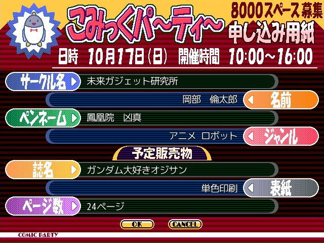

|
 クリックで画像が変わります(計4枚) | |
| オカリンクエスト 第2章中編 | |
| ダウンロード(218.6MB)／感想スレッド | |
| ジャンル | |
| パクリげー | |
| コメント | |
| フゥーハハハ！ これより、第1024回円卓会議を始める。 なに？円卓なんてどこにもないだとッ？ ふっ、実物はない。 だが、我らラボメンの心の中にはある。そうだろう？ さて、お前たちには我がラボが置かれている状況を伝えておく必要がある。 うぷ主の気が向くままに2022紅白からVIPRPGの実践投入が開始され、 多くの人が俺と知り合ったことで機関に狙われた。 サラ、クラウディア、シモーヌ… そんな彼女らに報いるため、俺は「まめ知識」機能を「クエスト受注画面」に実装したのだ。 これにより、これまで登場してきたキャラクター達や元ネタを知ることができるだろう。 そして、これより我々は、夢と狂気が交錯する聖地、こみっくパーティへと赴く。 そこには数々のサークルが集い、己の作品を世に知らしめるべく挑む者たちが待っている。 我々もまた、この機会を逃すわけにはいかぬ！ なぜ、あの聖戦に参加する必要があるのかだって？ フフフ、いい質問だ。 我がラボの目的は世界の支配構造の変革にある。 混沌に巻き込む同人誌を作り出し、その片鱗を披露するのだ！ [前作プレイ済みの方へ] プレイ時間が長くなってきたので、前回の祭り終了時点のセーブデータ同封しました。 | |
| 主催コメント | |
| 混沌(カオス)ここに極まれり | |